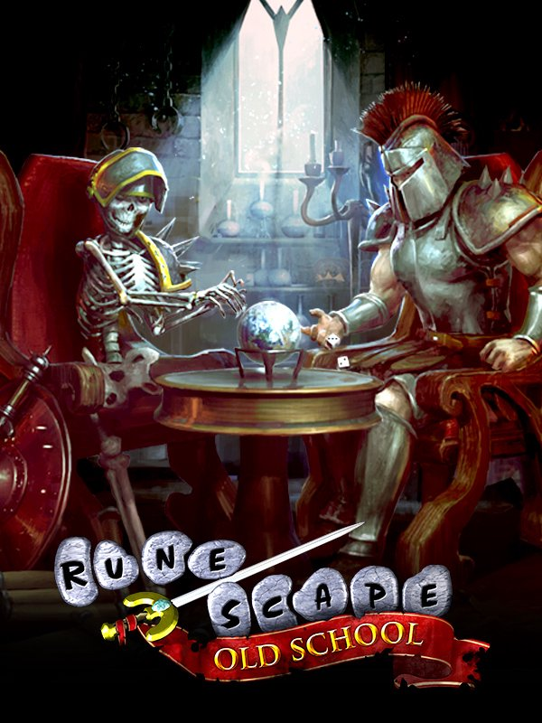

Old School RuneScape
Old School RuneScape
Details
|  | |
| Spielzeit | 7m 0s |
| Letzte Aktivität | 08.12.2022 16:06:54 |
| Hinzugefügt | 29.06.2021 11:11:55 |
| Modifiziert | 12.12.2022 1:04:50 |
| Fertigstellungsstatus | Gespielt |
| Bibliothek | Steam |
| Quelle | Steam |
| Plattform | PC (Windows) |
| Veröffentlichungsdatum | 24.02.2021 |
| Community Bewertungen | 90 |
| Kritiker Punkte | 77 |
| Benutzerwertung | |
| Genre | Adventure Free to Play 🐎 RPG |
| Entwickler | Jagex Ltd |
| Verleger | Jagex Ltd |
| Eigenschaft | Achievements In App Käufe Multiplayer Steam Karten 🦢 Cross Platform |
| Links | Communityhub Diskussionen Guides Neuigkeiten Shopseite PCGamingWiki Errungenschaften |
| Tag | Adventure Character Customization Classic Cult Classic Exploration Fantasy Free to Play Great Soundtrack Lore-Rich Massively Multiplayer MMORPG Multiplayer Nostalgia Old School Open World PvE PvP RPG Story Rich Third Person |
Beschreibung

Greetings, adventurer! Rooted in the origin of MMOs, Old School RuneScape is the only ever-lasting, ever-evolving adventure that is shaped by you.
Released way back in 2013, Old School RuneScape is RuneScape as you *used* to know it! Based on the 2007 build of the globally popular open world fantasy MMORPG, Old School is constantly updated with improvements and new content voted on by you, the fans! The close relationship between developers and players is central to what makes Old School so magical.

So, you want to be a master cook? Or a powerful mage? Whether you’re here for the rich story and lore, the challenging combat, to fight alongside others or against them, to journey alone or simply to experience the magical world of Gielinor, Old School can be any adventure you want.
 Master 23 diverse skills across a huge array of play styles Take on over 140 quests spanning the fascinating and varied game world Confront dozens and dozens of bosses Risk everything in an assortment of PvP encounters Profit from a thriving and dynamic in-game economy
Master 23 diverse skills across a huge array of play styles Take on over 140 quests spanning the fascinating and varied game world Confront dozens and dozens of bosses Risk everything in an assortment of PvP encounters Profit from a thriving and dynamic in-game economy
Some people just want to hang out with friends. And you’ll find plenty of folk to do that with in Gielinor. But those who want seek a different kind of adventure have plenty of choices, too.
No matter what you’re specializing in, the quest for the best loot will have skillers and perfectionists obsessing over their character builds. The strongest wand, the mightiest bow, the most *fabulous* hat – there’s always something to aim for.
And if you’re among the most ardent adventurers, be sure to let people know by donning one of the many Capes of Accomplishment. Who knows, maybe one day the fabled Max Cape can be yours?

A rich story and deep well of lore await those whose interests are more cerebral, too. From the dastardly dealings of corrupt rulers to the day-to-day musings of the village baker, tales of both... world-shattering urgency and casual procrastination abound.
Over two dozen major quest-lines allow players to delve into Gielinor’s past and future, and the pages are still being written, waiting for you to witness their unfolding. With major game updates every week, the experience never stops evolving and improving.
This world goes where you go, too, with full cross-compatibility across PC and mobile versions!

The key to Old School’s success is both special and unique – it’s you! From the day Old School was born, we recognized that building on the game’s foundations while staying loyal to its very essence was essential. That’s why players have the deciding vote on every improvement that is or is not introduced to the game.
In-game polling isn’t the only interaction, either. Join developers on their regular behind-the-scenes live-streams, or chat with them directly across our many social channels. Old School is owned just as much by its players as it is its makers.

Old School is a free-to-play game that anyone can enjoy, and many of our players have been with us for almost two decades without ever paying for membership. But Membership unlocks even more thrilling content to get stuck into. Members enjoy access to:
8 additional skills, including Farming, Thieving and Slayer. Access to the entire game world map Over 120 additional quests Access to powerful, exclusive items Dozens of exclusive mini games Additional navigation optionsFurthermore, players can pay for Membership with Bonds that are either purchased or earned in-game! Membership is shared across both Old School RuneScape and RuneScape.